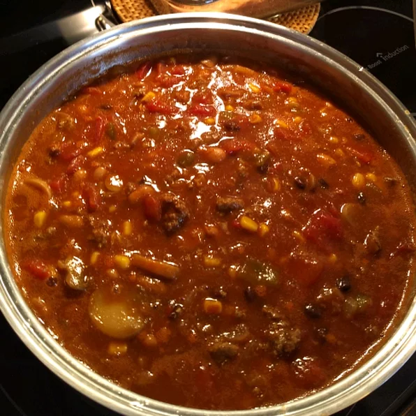

Black Bean Chili

Chili with black beans.
A chili that is best when prepared with fresh vegetables, but still delicious with canned or frozen. Serve by itself or over rice.
Ingredients
- 1 tablespoon olive oil
- 1 chopped onion
- 2 chopped red bell pepper
- 1 minced jalapeno
- 10 chopped fresh mushrooms
- 6 diced tomatoes
- 1 cup fresh corn
- 1 teaspoon ground black pepper
- 1 teaspoon ground cumin
- t tablespoon chili powder
- 2 cans black beans drained (30 oz)
- 1 1/2 cups chicken broth
- 1 teaspoon salt
Steps
- Heat oil in a large saucepan over medium-high heat. Saute the onion, red bell peppers, jalapeno, mushrooms, tomatoes and corn for 10 minutes or until the onions are translucent. Season with black pepper, cumin, and chili powder. Stir in the black beans, chicken or vegetable broth, and salt. Bring to a boil.
- Reduce heat to medium low. Remove 1 1/2 cups of the soup to food processor or blender; puree and stir the bean mixture back into the soup. Serve hot by itself or over rice.
Recipe from AllRecipes.com